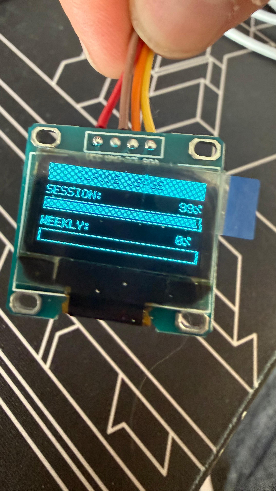
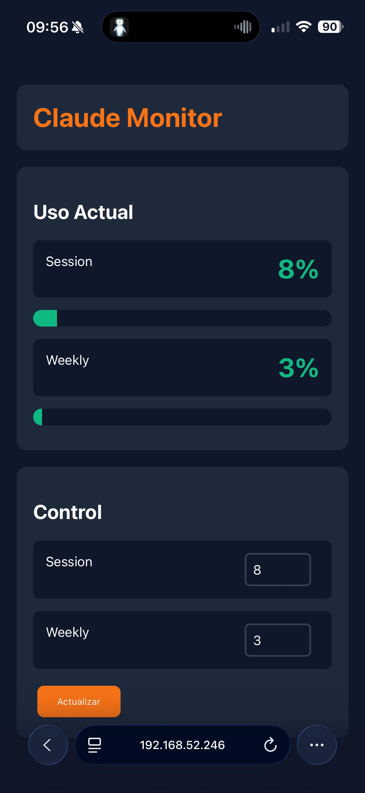
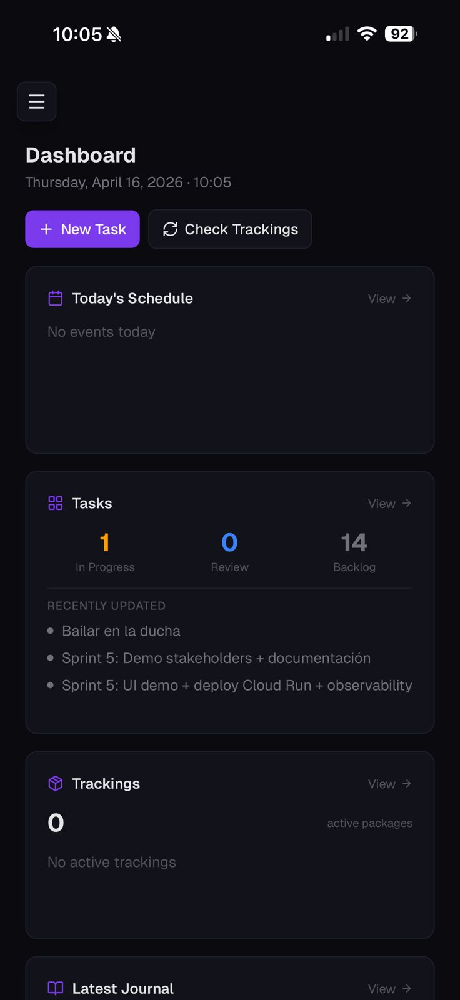
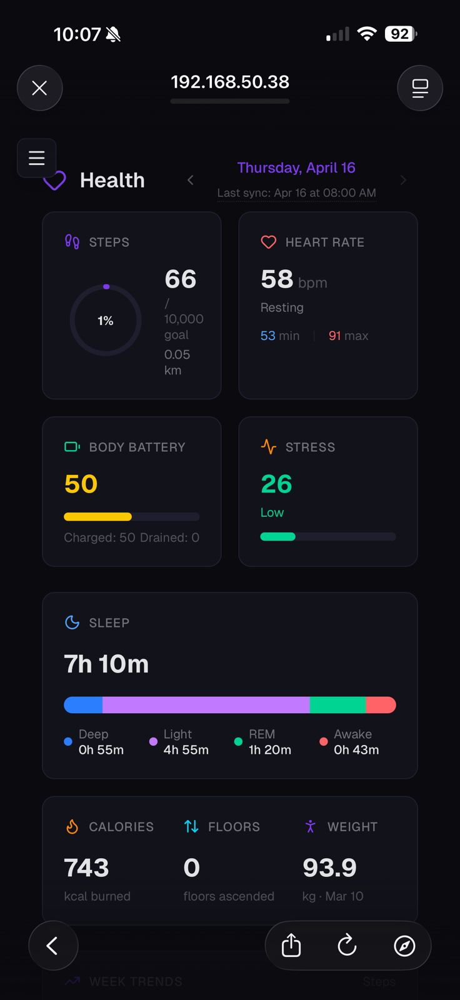
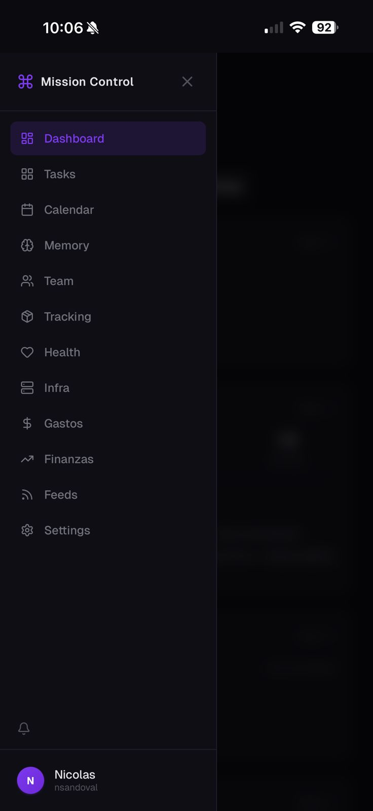

Dos perspectivas reales sobre AI en organizaciones de ingeniería
Nerdearla Chile 2026
Somos nerds del café (hasta tostamos en conjunto). Hicimos todas las montañas rusas de 4 parques de Disney en 1 día. Y ahora contamos lo que aprendimos sobre AI en producción. Sin demos de laboratorio. Sin slides de vendors.
Nico:
"En 2 horas armé un monitor de consumo de API con un microcontrolador ESP32, una pantalla OLED y Claude como copiloto. Funcionaba perfecto. Era el 80%."
Sergio:
"En 4 meses implementamos un modelo de desarrollo basado en AI a centenares de devs. Con guardrails claros, estandarización, coherencia. El primer piloto funcionó en 2 semanas. Lo difícil empezó después."
Ambas cosas son verdad al mismo tiempo.
La IA democratizó lo que antes era lento
Conectar un microcontrolador ESP32 a la API de Claude para monitorear tokens consumidos y mostrarlos en un display. Parece simple.
Lo hiciste funcionar en horas. El ESP32 se comunica con Claude, obtiene datos, los muestra en una pantalla OLED. Velocidad: impresionante.
Cloudflare bloquea requests que no vienen de un navegador autenticado. Tu ESP32 no es un navegador. El 80% de repente no funciona en el contexto real.
Armaste un mini servidor en tu compu que actúa como proxy. Ahora el ESP32 le pega al servidor local, que a su vez habla con Claude. Funcionó. Pero requirió arquitectura extra, middlewares, capas de indirección.
Hardware

App

Integrar TODO en un mismo lugar: tareas, datos de salud (Garmin), tracking de paquetes, gastos (tap and pay). Un hub central donde ves todo.
Lo armaste. Funciona. Tienes visibility total sobre tu vida en un dashboard. AI te ayuda a procesar, conectar puntos, sugerir acciones. Rápido, funcional, tuyo.
Backup de datos. Seguridad. Notificaciones push. Exposición a internet. Más integraciones. Está en 80% porque es un proyecto personal. Si fuera para vender, eso sería work.
Dashboard

Health

Menú

Donde la curva sube exponencialmente
Implementamos un modelo de desarrollo basado en AI con guardrails claros. Skills específicos. Estandarización. Coherencia predecible.
Centenas de devs lo adoptaron. Aceleró el development. Todo parecía estar bajo control. Los guardrails funcionaban.
Con el tiempo, el modelo comenzó a desviarse. Devs encontraron formas creativas de saltarse guardrails. El modelo alucina en contextos no previstos. La coherencia que ganamos en el 80% se quiebra.
Mantener que el modelo siga siendo confiable. Auditar desvíos constantemente. Reentrenar skills. Human in the loop. No es "set and forget". Es trabajo continuo.
Cliente: sin nada de AI en desarrollo. Nos piden ayuda para escalar.
Cuando voy a visitarlo, ya tiene una POC armada. Por ellos. No me necesitaban para llegar al 80%. El 80% ya se democratizó tanto que los clientes lo hacen solos.
La POC tiene exactamente los problemas que dijimos: desvíos en guardrails, coherencia cuestionable, confianza baja. Ahora sí me necesitan. Para industrializar. Para que no se erosione todo.
El 80% es gratis. El 20% es lo que se vende ahora.
Un equipo de desarrollo "completo" era caro. Solo grandes empresas podían pagarlo. El talento senior era limitado y caro.
Con cyborg engineers (human + AI), puedes tener capacidad similar por una fracción del costo. El ticket baja. El acceso se democratiza. Startups que antes no podían ahora sí.
No puedes simplemente bajar el precio y esperar que la calidad se mantenga. El 20% es: ¿cómo mantengo estándares cuando la capacidad es más barata y accesible?
Democratización ≠ Lawlessness. Más acceso requiere más governance, no menos.
Qué separa a quienes lo logran
No persiguen el caso de uso "más sexy". Buscan el más controlable, donde puedas medir el éxito sin sorpresas.
No como un proyecto especial. Como un layer más de tu stack. Con SLAs, con monitoreo, con governance.
No "cuántos usan Copilot" sino "cuánto bajó el cycle time". No "qué tan bonito es el modelo" sino "cuántas alucina".
Y tiene presupuesto para hacerlo. No es una sorpresa. Es parte del plan desde el día 1.
No. Están quedándose en el 80% y llamándolo éxito.
En una startup o proyecto personal: está bien. El 80% ya da valor.
En una empresa que vende servicios o productos: ese 80% es un prototipo. El 20% es lo que diferencia el prototipo del producto.
| Empresa chica / maker | Empresa grande | |
|---|---|---|
| Velocidad | El 80% ya es un producto | El 80% es un prototipo |
| Seguridad | "Suficientemente bueno" | Un CVE, un breach, un titular |
| Escalabilidad | 100 usuarios perdonan todo | 1M usuarios no perdonan nada |
| Regulación | Casi irrelevante | Compliance, SOC2, BCRA, CMF... |
| El 20% restante | Opcional | No negociable |
¿Dónde estoy parado con AI?
→ El 80% alcanza. Experimenta, aprende, itera.
→ El 20% no es opcional. Seguridad, auditoría, confianza son non-negotiable.
→ El 20% se multiplica. Cada decisión del modelo impacta a centenares de personas. El costo del error es alto.
No hay respuesta universal. Hay contexto.
Identifica un caso donde estás en el 80%. Pregúntate conscientemente: ¿Es una decisión o un descuido?
Preguntas?